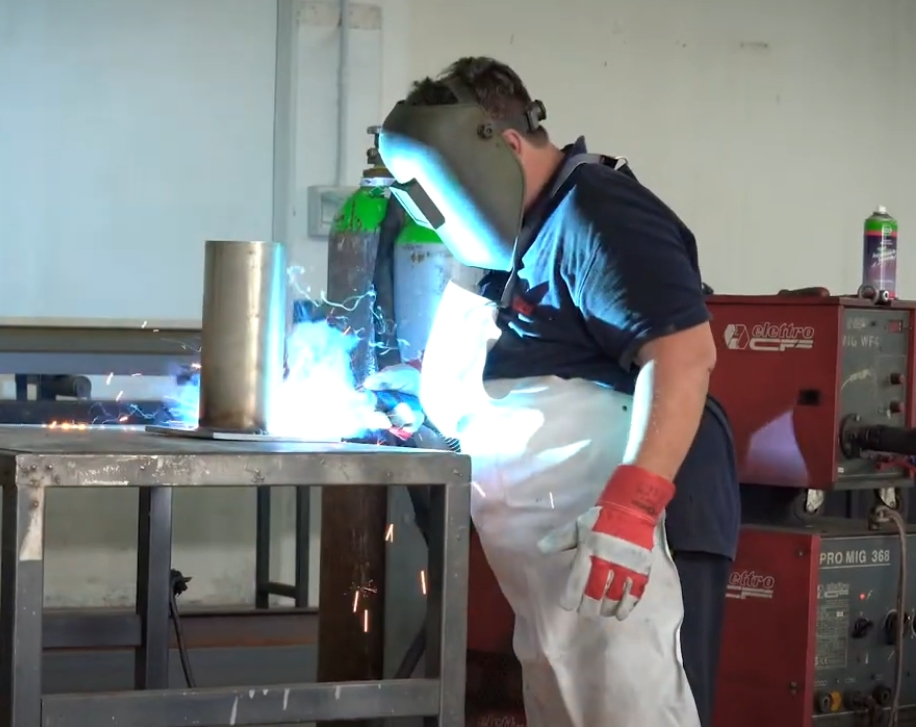
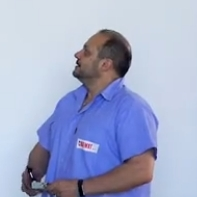
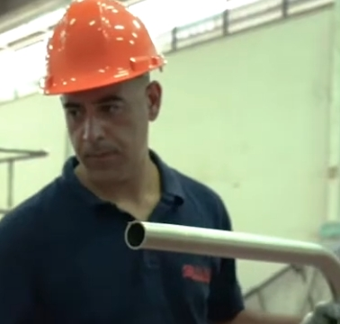
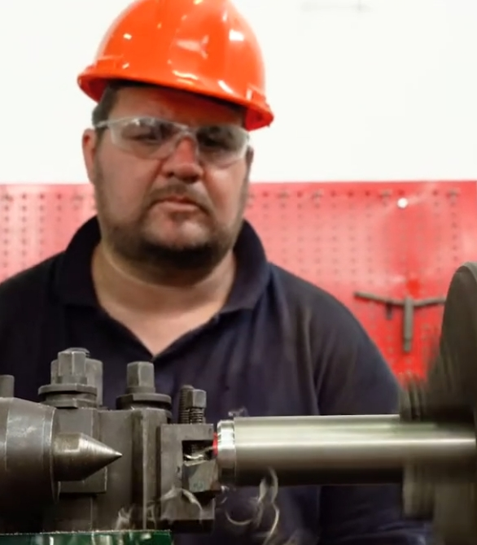
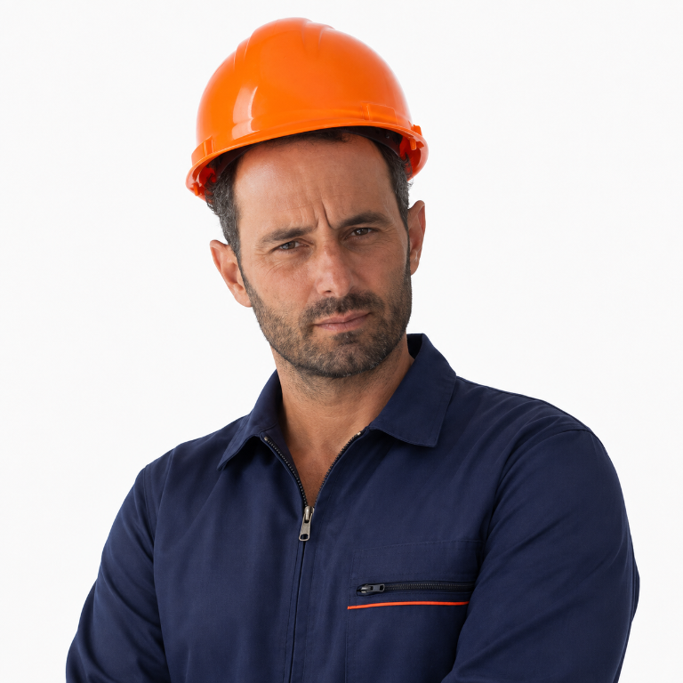
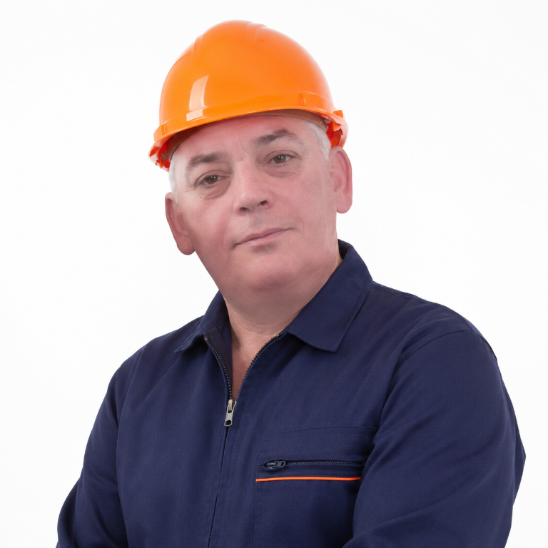

Scopri la storia e la missione di Italmeccanica
Nata il 29 luglio 2002 a Catania, Italmeccanica è un’azienda specializzata nella lavorazione dei metalli, nello stampaggio, nella carpenteria metallica e nelle lavorazioni di saldatura.
Fin dalle sue origini, l’azienda ha costruito il proprio percorso sulla competenza tecnica, sulla precisione delle lavorazioni e sulla capacità di offrire soluzioni affidabili e personalizzate, rispondendo alle esigenze di clienti e partner in diversi ambiti industriali.
A guidare Italmeccanica sono Francesco Strano e Nunzio Pappalardo, che nel corso degli anni hanno contribuito allo sviluppo dell’azienda con una visione orientata alla crescita, all’innovazione e alla qualità.
La conoscenza approfondita dei materiali e dei processi produttivi, unita all’esperienza maturata nel settore, permette a Italmeccanica di affrontare ogni commessa con professionalità, attenzione ai dettagli e rispetto degli standard qualitativi.
Dalla carpenteria alla saldatura, dallo stampaggio alla lavorazione dei metalli, ogni fase viene affrontata con l’obiettivo di trasformare le esigenze del cliente in soluzioni concrete, precise e durature.
Con solide radici in Sicilia e uno sguardo rivolto al futuro, Italmeccanica continua a investire nelle proprie competenze, nelle tecnologie e nelle persone, con la volontà di consolidare la propria presenza nel settore metalmeccanico e costruire nuove opportunità di crescita.


Direttore Generale
Fondatore e guida dell'azienda con oltre 20 anni di esperienza nel settore

Direttore Generale
Co-fondatore dell'azienda, esperto nella gestione operativa e qualità

Tornitore e Saldatore
Specialista in torneria e saldatura con esperienza in lavorazioni di precisione

Serramentista Alluminio
Esperto in serramenti in alluminio e lavorazioni specializzate

Fabbro Specializzato
Fabbro specializzato con competenze avanzate in lavorazioni ferro